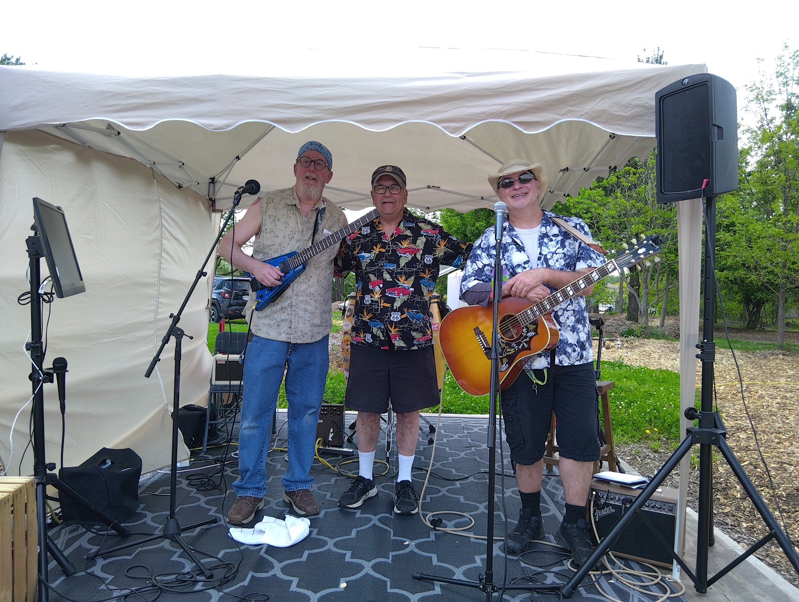
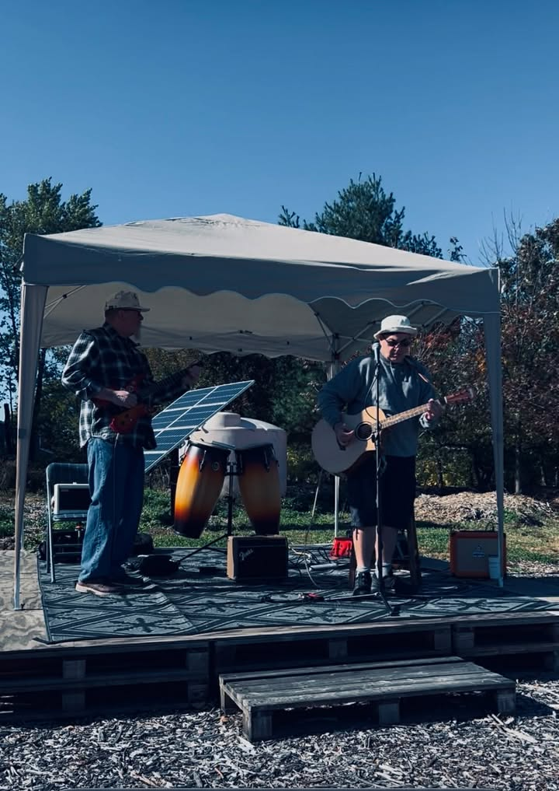
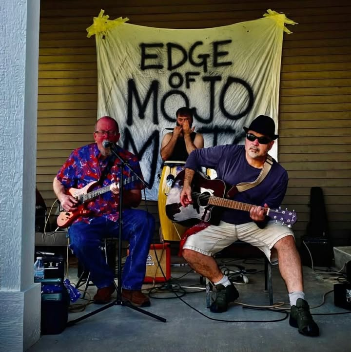

<script type="application/ld+json">
{
  "@context": "https://schema.org",
  "@graph": [
    {
      "@type": "Organization",
      "@id": "https://www.edgeofliberty.us/the-edge-of-mojo/#org",
      "name": "The Edge of Mojo",
      "url": "https://www.edgeofliberty.us/the-edge-of-mojo/",
      "description": "Classic rock and country with a laid-back, good-time vibe",
      "image": "https://www.edgeofliberty.us/the-edge-of-mojo/00000_IMG_20260517_133006_1.jpg",
      "areaServed": {
        "@type": "City",
        "name": "Valparaiso, Indiana"
      }
    },
    {
      "@type": "BreadcrumbList",
      "itemListElement": [
        {
          "@type": "ListItem",
          "position": 1,
          "name": "Home",
          "item": "https://www.edgeofliberty.us/"
        },
        {
          "@type": "ListItem",
          "position": 2,
          "name": "The Edge of Mojo",
          "item": "https://www.edgeofliberty.us/the-edge-of-mojo/"
        }
      ]
    }
  ]
}
</script>
<section class="vendor-page">
<h1>The Edge of Mojo</h1>
<div class="vendor-content">
<p class="vendor-lead">Classic rock and country with a laid-back, good-time vibe — find The Edge of Mojo at The Edge of Liberty Craft Fair in Valparaiso, IN (Northwest Indiana).</p>
<p>A Local ever evolving group formerly known as The Sad Mojo (aka The Bad Mojo) — currently a trio who play a mix of rock, blues, country, reggae, and jazz with a laid-back, good-time vibe (think guitars, blues harp, congas, and pure summer spirit).</p>
<p></p>
<p>Taking over the karaoke stage every other week the entire season</p>
<p></p>
<p>All donations will go to various local (Porter County) animal shelters</p><p class="vendor-inperson-only">This vendor currently sells in person at our craft fairs only.</p>
<div class="vendor-dates">
<h3>Find us at these craft fair dates</h3>
<ul>
<li><a href="/may-17-2026/">May 17, 2026</a></li>
<li><a href="/may-31-2026/">May 31, 2026</a></li>
<li><a href="/june-14-2026/">June 14, 2026</a></li>
<li><a href="/june-28-2026/">June 28, 2026</a></li>
<li><a href="/july-12-2026/">July 12, 2026</a></li>
<li><a href="/july-19-2026/">July 19, 2026</a></li>
<li><a href="/july-26-2026/">July 26, 2026</a></li>
<li><a href="/august-09-2026/">August 09, 2026</a></li>
<li><a href="/august-23-2026/">August 23, 2026</a></li>
<li><a href="/september-06-2026/">September 06, 2026</a></li>
<li><a href="/september-20-2026/">September 20, 2026</a></li>
<li><a href="/october-04-2026/">October 04, 2026</a></li>
<li><a href="/october-18-2026/">October 18, 2026</a></li>
<li><a href="/november-01-2026/">November 01, 2026</a></li>
</ul>
</div>
<h3>Gallery</h3>
<div class="vendor-photos constrained-gallery">
<div class="vendor-masonry">



</div>
</div>
</div>
</section>
